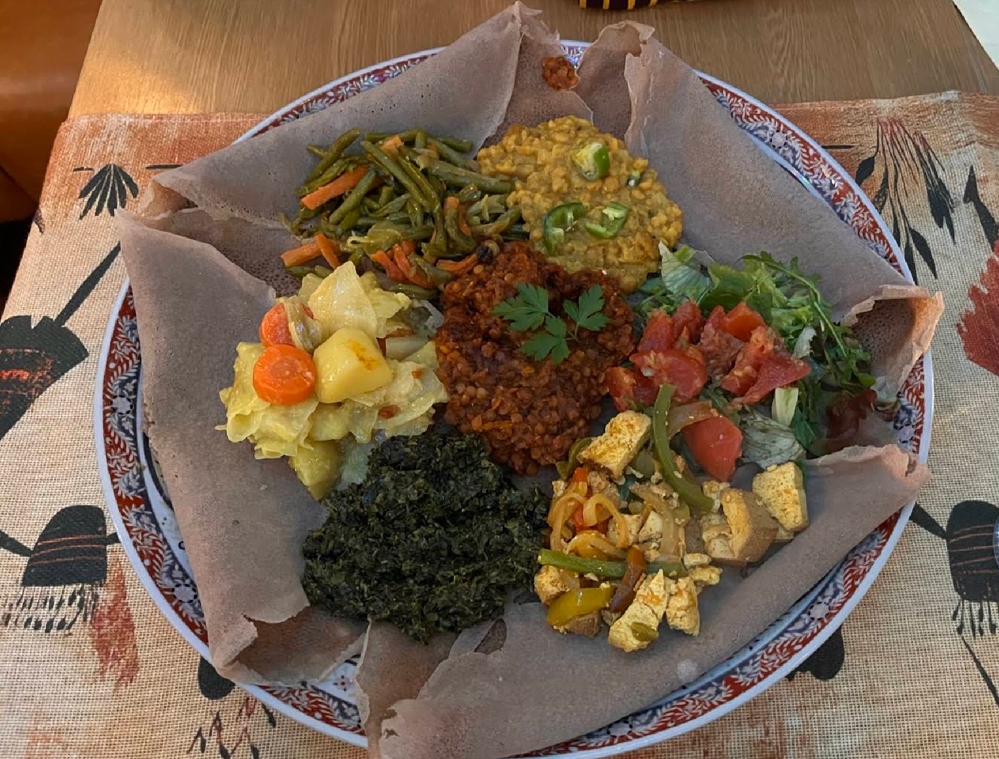
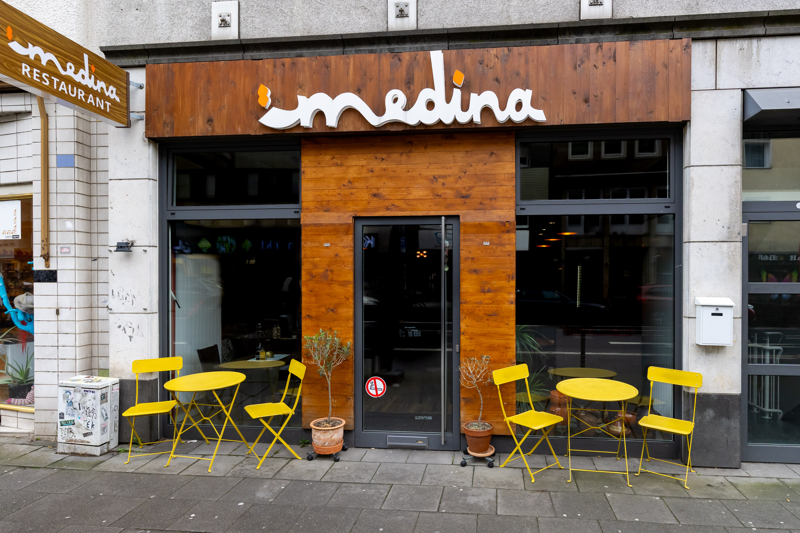
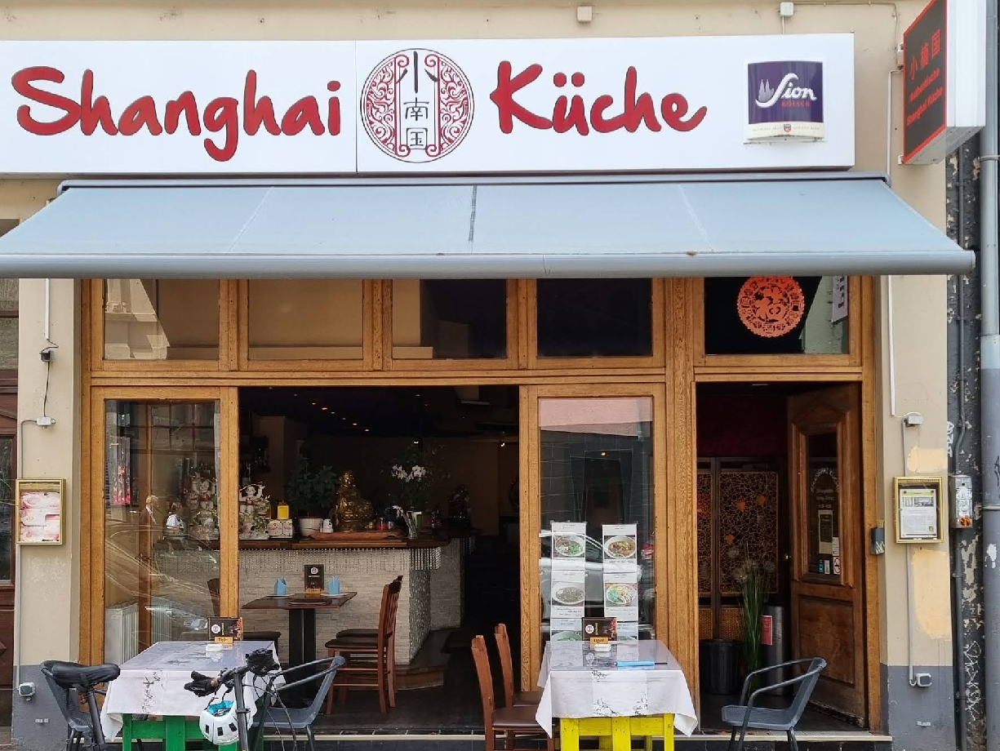
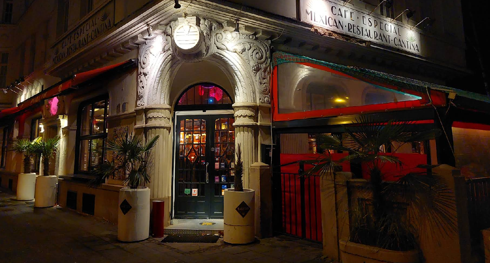

Bild folgtFasika
Äthiopische Küche mitten in Köln – bunte Gewürze, herzliche Atmosphäre, gemeinsam mit den Händen genossen.
Restaurant entdecken →Statt eines Dinges schenken wir euch ein Erlebnis: Wählt zwei der vier ausgesuchten Restaurants aus und genießt jeweils ein gemeinsames Essen auf uns – als kleine Auszeit füreinander.
Liebe Melina, lieber Simon, zu eurer Hochzeit wollten wir euch etwas schenken, das euch noch lange in Erinnerung bleibt. Deshalb laden wir euch zu zwei besonderen Restaurantbesuchen ein – ihr sucht euch zwei der vier unten vorgestellten Restaurants aus, meldet euch bei uns zur Terminfindung, und den Rest übernehmen wir.
Von Herzen, Kay und Lukas
Klickt auf ein Restaurant, um Fotos und die Speisekarte anzusehen.

Bild folgtÄthiopische Küche mitten in Köln – bunte Gewürze, herzliche Atmosphäre, gemeinsam mit den Händen genossen.
Restaurant entdecken →
Bild folgtNordafrikanische Küche in Köln – Tajines, Couscous und tunesisches Street Food in traditioneller Atmosphäre.
Restaurant entdecken →
Bild folgtAuthentische chinesische Küche im Belgischen Viertel – Xiao Long Bao, Dim Sum und Shanghai-Spezialitäten.
Restaurant entdecken →
Bild folgtMexican Madness seit 1986 in Köln-Deutz – Tacos, Fajitas, Margaritas und beste Cantina-Stimmung.
Restaurant entdecken →